5.2 设备独立性软件
本节聚焦 I/O 软件层次结构中最重要的一层——设备独立性软件（设备无关软件），依次讲解它的公共功能、缓冲区管理、设备分配与回收、SPOOLing 技术、设备驱动程序接口，并用一个完整的 I/O 操作实例收尾。学习本节前，请带着两个问题：①当处理机和外部设备的速度差距较大时，有什么办法解决这个问题？②什么是设备独立性？引入它有什么好处？
5.2.1 设备独立性软件
设备独立性软件位于设备驱动程序之上，是内核 I/O 子系统的最高层。它与驱动程序之间的界限并非固定，常因操作系统设计或设备类型而异——某些通常由它实现的功能有时会被下放至驱动程序，这是对系统性能、代码复用性、驱动效率等因素综合权衡的结果。总体而言，其核心职责是实现各类设备的公共操作，为上层提供统一、抽象的 I/O 接口，具体包括五项公共功能：
- 提供统一的驱动程序接口：所有设备驱动程序遵循一致的接口规范，便于驱动开发与系统扩展；设备独立性软件负责把抽象设备名映射到具体物理设备、定位相应驱动程序的入口，并确保 I/O 操作通过内核的受控路径执行，保障系统安全；
- 缓冲管理：采用缓冲机制缓解 CPU 与外设的速度差异、提高 CPU 利用率；缓冲形式有单缓冲、双缓冲、环形（循环）缓冲和缓冲池等，按场景灵活选用（见 5.2.2 节）；
- 差错控制：I/O 设备含机械与电气部件、故障率较高。错误分两类——暂时性错误（如网络丢包）通常重试即可纠正，连续失败才视为持久性错误，主要由驱动程序处理，设备无关层只在驱动解决不了时介入；持久性错误（如磁盘划痕）则记录到坏块表，后续 I/O 自动绕过，避免更换整盘；
- 独占设备的分配与回收：对打印机等独占设备统一分配以避免竞争。进程请求设备时若设备空闲则立即分配，否则阻塞并加入等待队列；设备释放时若队列非空则唤醒队首进程，否则把设备状态置为「空闲」，完成回收；
- 提供统一的逻辑数据块：不同设备的交换单位各异（字符设备按字节、块设备按数据块且块长可能不同），本层通过抽象屏蔽差异，向上层提供大小统一的逻辑数据块。
5.2.2 高速缓存与缓冲区
1. 磁盘高速缓存（Disk Cache）
操作系统采用磁盘高速缓存技术提高磁盘 I/O 性能——访问高速缓存中的数据比直接读/写磁盘高效得多。注意：磁盘高速缓存不是通常意义上位于 CPU 与主存之间的硬件缓存，而是指利用内存中的存储空间暂存从磁盘读取的盘块数据；这些数据在逻辑上是磁盘内容的副本，物理上驻留在内存中。其组织形式有两种：①在内存中开辟固定大小的专用缓存区；②把系统空闲内存作为动态缓冲池，供请求分页系统和磁盘 I/O 子系统共享使用。
2. 缓冲区（Buffer）
在设备管理子系统中，引入缓冲区的主要目的有四：
- 缓和 CPU 与 I/O 设备间速度不匹配的矛盾；
- 减少对 CPU 的中断频率，放宽对中断响应时间的限制；
- 解决基本数据单元大小（数据粒度）不匹配的问题；
- 提高 CPU 与 I/O 设备之间的并行性。
缓冲区的实现方法有两种：①采用硬件缓冲器，成本高，除关键部位外一般不采用；②利用内存作为缓冲区（本节讨论的即此类）。按系统设置的缓冲区数量，缓冲技术分为单缓冲、双缓冲、循环缓冲和缓冲池四种。
（1）单缓冲
进程发出 I/O 请求时，操作系统在内存中为它分配一个缓冲区，大小通常为一个数据块。设：设备把一块数据送入缓冲区耗时 \(T\)，操作系统把缓冲区数据送到用户工作区耗时 \(M\)，CPU 处理该块数据耗时 \(C\)。对块设备，必须等整块数据装入缓冲区后才能传送到工作区。工作节奏如下（以连续处理多块为例）：
块号 1 2 3
设备输入T [T1] [T2] [T3] ...（可与上一块的处理重叠）
缓冲区→工作区M [M1] [M2]
CPU处理C [C1] [C2]
关键在于分析 \(T\) 与 \(C\) 的并行关系：设备向缓冲区写入数据的时间 T，可与 CPU 处理前一块数据的时间 C 并行。
- 当 \(T > C\)：设备填得慢、CPU 处理得快。CPU 处理完当前块后必须等设备把下一块完整写入缓冲区，才能执行传送 \(M\)。稳态下每块耗时由 \(T\) 决定，再加一次传送，即 \(T+M\)；
- 当 \(T < C\)：设备填得快、CPU 处理得慢。缓冲区装满后设备无法继续写入，必须等 CPU 处理完工作区中的当前块、腾出（传送走）缓冲区。稳态下每块耗时由 \(C\) 决定，再加一次传送，即 \(C+M\)。
综上，单缓冲处理每块数据的平均时间为
$$T_{单} = \max(T, C) + M$$
另外，单缓冲是共享资源（临界资源），设备与 CPU 对它的访问必须互斥：若 CPU 尚未取走缓冲区中的数据，即使设备已准备好新数据也无法写入，只能等待缓冲区释放。
（2）双缓冲
为加快 I/O 速度、提高设备利用率，引入双缓冲（也称缓冲对换）：设备输入时先把数据送入缓冲区 1，装满后转向缓冲区 2 写入；与此同时操作系统可从已满的缓冲区 1 取数送入工作区由 CPU 处理；缓冲区 1 处理完、缓冲区 2 又装满时，系统切换到缓冲区 2 取数，设备又开始向缓冲区 1 写新数据——两个缓冲区交替收发，设备与 CPU 的并行程度显著提高。
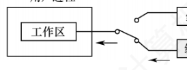
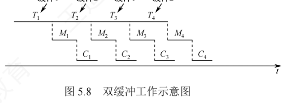
仍设输入、传送、处理耗时分别为 \(T\)、\(M\)、\(C\)。双缓冲中，设备向一个缓冲区写入的时间 T，可与操作系统传送及处理另一块的时间 C+M 并行：
- 当 \(T > C+M\)：设备输入更慢，设备可连续工作。例如缓冲区 1 空、缓冲区 2 满时，系统传送并处理缓冲区 2 的数据（共 \(C+M\)），同时设备向缓冲区 1 写入；由于 \(T > C+M\)，处理完毕时缓冲区 1 还没装满，系统必须等它装满。稳态每块耗时 \(T\)；
- 当 \(T < C+M\)：设备输入快，CPU 无须等待设备。缓冲区 1 很快装满，但系统仍须等缓冲区 2 的数据完全处理完才能切换。稳态每块耗时 \(C+M\)。
综上，双缓冲处理每块数据的平均时间为
$$T_{双} = \max(T,\; C+M)$$
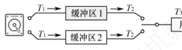
单缓冲：稳态每块 \(\max(100,50)+50=150\,\mu s\)；第 1 块需串行 \(T+M+C=200\,\mu s\)，其余 9 块每块增量 150，总计 \(200+9\times150=1550\,\mu s\)。
双缓冲：稳态每块 \(\max(100,\,50+50)=100\,\mu s\)，10 块可连续从磁盘读入而无须等待；最后一块还需 \(M+C=100\,\mu s\) 收尾，总计 \(100\times10+50+50=1100\,\mu s\)。故选 B（1550μs, 1100μs）。
再看一个变式（2013 统考）：单缓冲、处理 2 块，\(T=100\)、\(M=5\)、\(C=90\)。第 1 块到工作区耗时 \(100+5=105\)；第 1 块被分析期间（90），第 2 块的输入+传送（105）与之并行；再加之第 2 块的分析 90，总计 \(105+105+90=300\)。可见公式背后的本质是「谁慢听谁的，M 永远串行」。
双机通信中的缓冲区设置：若两台机器间要实现全双工通信（双方同时收发），每台机器须分别设置发送缓冲区和接收缓冲区——A 机的发送缓冲区对应 B 机的接收缓冲区，反之亦然。若每台机器只配一个缓冲区，则无法同时收发。
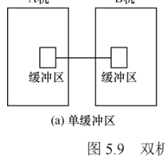
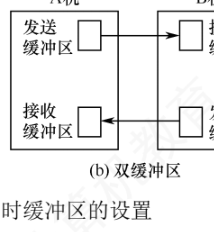
（3）循环缓冲
双缓冲在输入与输出速度基本匹配时效果较好；若两者速率相差较大，双缓冲就难以发挥作用。为此可引入多缓冲，并把多个缓冲区组织成循环缓冲区：由若干个大小相等的缓冲区构成，每个缓冲区含一个链接指针指向下一个缓冲区，最后一个缓冲区的指针指向第一个，形成循环队列结构。
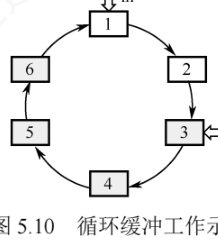
系统维护两个指针：in 指向下一个待写入的空缓冲区，out 指向下一个待读取的满缓冲区。输入进程与计算进程分别推进 in 和 out 指针，沿链接方向循环移动，从而实现输入与计算的并行执行。由于两者速度可能不一致，运行中会出现两种同步情形：
- in 追赶上 out（系统受计算限制）：输入快于计算，所有缓冲区被填满、无空缓冲区可写 → 输入进程阻塞，直至计算进程取走一个缓冲区的数据、腾出空缓冲区后将其唤醒；
- out 追赶上 in（系统受 I/O 限制）：计算快于输入，所有缓冲区为空、无数据可处理 → 计算进程阻塞，直至输入进程写入一个满缓冲区后将其唤醒。
（4）缓冲池
单个缓冲区只是一块内存区域；缓冲池则是包含管理数据结构和操作函数的软件机制，统一管理多个缓冲区，供多进程共享使用。池中缓冲区按使用状态组织成三个队列：①空缓冲队列（空缓冲区链成）；②输入队列（装满输入数据的缓冲区链成）；③输出队列（装满输出数据的缓冲区链成）。
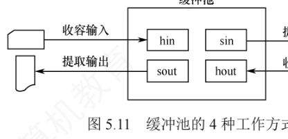
操作过程中，一个缓冲区可动态扮演四种角色：①收容输入缓冲区（hin）——暂存输入数据；②提取输入缓冲区（sin）——供读取输入数据；③收容输出缓冲区（hout）——暂存输出数据；④提取输出缓冲区（sout）——供读取输出数据。缓冲池按以下四种方式工作：
- 收容输入：输入进程需要输入数据时，从空缓冲队列队首摘一个空缓冲区作 hin，写入输入数据，装满后挂到输入队列队尾；
- 提取输入：计算进程需要输入数据时，从输入队列队首摘一个缓冲区作 sin，读取数据，读完挂回空缓冲队列队尾；
- 收容输出：计算进程需要输出数据时，从空缓冲队列队首摘一个空缓冲区作 hout，写入输出数据，装满后挂到输出队列队尾；
- 提取输出：输出进程需要输出数据时，从输出队列队首摘一个缓冲区作 sout，读取数据，读完挂回空缓冲队列队尾。
3. 高速缓存与缓冲区的对比
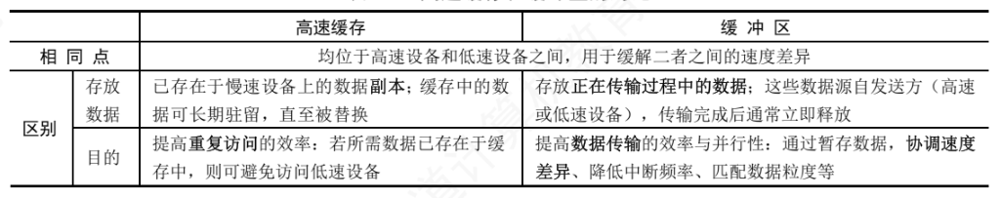
5.2.3 设备分配与回收
1. 设备分配概述
设备分配指根据用户的 I/O 请求分配所需设备的过程。总体原则：在充分发挥设备使用效率（让设备尽可能忙碌）的同时，避免因分配策略不当引发进程死锁。
2. 设备分配的数据结构
系统中可能存在多个通道，一个通道可连接多个控制器，每个控制器又可连接多台设备——设备分配的数据结构必须体现这种层级从属关系。
（1）设备控制表（DCT）：系统为每台物理设备配置一张，记录该设备的各项属性（图 5.12）：
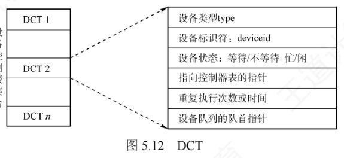
- 设备类型：如打印机、扫描仪、键盘等；
- 设备标识符：即物理设备名，系统内唯一；
- 设备状态：当前忙/闲（等待/不等待）；
- 指向控制器表的指针：每台设备由一个控制器控制，该指针指向对应控制器表；
- 重复执行次数或时间：I/O 操作的可重试次数，超过即判定 I/O 失败；
- 设备队列的队首指针：指向因请求该设备而阻塞的进程队列（由 PCB 构成）的队首。
（2）控制器控制表（COCT）：每个设备控制器一张，记录控制器状态及所辖设备信息（图 5.13(a)）；通过其中的「与控制器连接的通道表指针」可找到相应通道的信息。操作系统据此管理控制器。
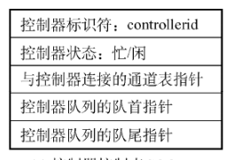
（3）通道控制表（CHCT）：每个通道一张，管理该通道及其下属控制器（图 5.13(b)）；通过其中的「与通道连接的控制器表首址」可找到该通道管理的所有控制器信息。操作系统据此管理通道。
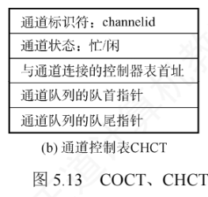
（4）系统设备表（SDT）：全系统只有一张，每个表目对应一台设备，通常包含设备类型、设备标识符、DCT 及驱动程序入口等信息（图 5.13(c)）。它是系统范围的总表，是设备分配的查找起点。
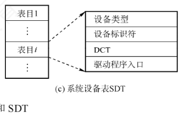
3. 设备分配时应考虑的因素
（1）设备的固有属性——决定分配策略的三类设备：①独占设备：分给某进程后由其独占使用，直至主动释放或终止；②共享设备：可同时供多个进程使用，需调度机制协调访问顺序（如磁盘）；③虚拟设备：对独占设备做虚拟化（如 SPOOLing），使其逻辑上可共享，允许多进程并发提交 I/O 请求。
（2）设备分配算法——常用两种：①FCFS（先来先服务）：按请求先后排成等待队列，优先分配给队首进程；②最高优先级优先：高优先级进程排前面，优先级相同时再按 FCFS。
（3）设备分配中的安全性——避免分配过程中死锁的两种方式：
| 方式 | 做法 | 优点 | 缺点 |
|---|---|---|---|
| 安全分配方式 | 进程发出 I/O 请求后立即阻塞，I/O 完成才唤醒；期间不再请求其他资源 | 安全，不会死锁（「请求即阻塞」切断了循环等待的可能） | CPU 与 I/O 设备串行工作，系统效率低 |
| 不安全分配方式 | 进程发出 I/O 请求后继续运行，可再发第二、第三个 I/O 请求；仅当所请求设备已被他进程占用时才阻塞 | 一个进程可同时操作多个设备，推进迅速 | 可能因循环等待而死锁 |
4. 设备分配的步骤
以独占设备为例，基于物理设备名的分配分三步：
- 分配设备：根据 I/O 请求中的物理设备名查 SDT，找出该设备的 DCT；查设备状态字段，忙则把进程 PCB 挂入设备等待队列，空闲则把设备分配给进程；
- 分配控制器：根据 DCT 找到对应 COCT；控制器忙则把 PCB 挂入控制器等待队列，空闲则分配控制器；
- 分配通道：根据 COCT 找到对应 CHCT；通道忙则把 PCB 挂入通道等待队列，空闲则分配通道。只有设备、控制器、通道都分配成功，本次设备分配才算完成，之后才能启动设备传送数据。
按物理设备名请求的缺陷：若指定设备恰好被其他进程占用，分配即告失败——这说明该方案缺乏设备独立性。改进方案是进程改用逻辑设备名请求：系统从 SDT 中依次查找该类设备的 DCT，只要有一台空闲就继续后续分配；仅当同类设备全部忙时，才把进程挂入该类设备的公共等待队列。
5. 逻辑设备名到物理设备名的映射
进程用逻辑设备名请求设备，而系统只能识别物理设备名，因此系统中要配置一张逻辑设备表（LUT，Logical Unit Table）完成映射。LUT 的每个表项包含三项：逻辑设备名、物理设备名、驱动程序入口地址。进程以某逻辑设备名请求设备时，系统为其分配一台空闲的物理设备并在 LUT 中建立表目；此后该进程的所有 I/O 请求都经该表项找到对应的物理设备及其驱动程序。
LUT 有两种设置方式：
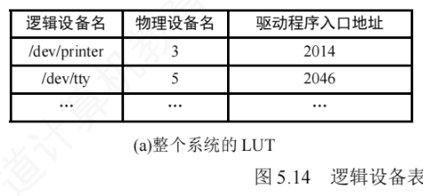
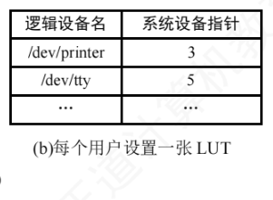
- 整个系统仅设置一张 LUT：所有进程的设备分配情况记录在同一张表中，要求所有用户不能使用相同的逻辑设备名，适用于单用户系统；
- 为每个用户设置一张 LUT：系统仍维护全局的 SDT；不同用户可使用相同的逻辑设备名而互不干扰，适用于多用户系统。
5.2.4 SPOOLing技术（假脱机技术）
为缓和 CPU 的高速性与 I/O 设备低速性之间的矛盾，操作系统引入了 SPOOLing（假脱机）技术。它源于早期的脱机 I/O 方式：靠专用外围控制机在主机不参与的情况下完成 I/O——输入时外围机把低速输入设备（如纸带机）的数据预先读入高速磁盘；输出时 CPU 先把结果高速写入磁盘，再由外围机送往低速输出设备（如打印机）。因整个 I/O 过程脱离主机控制，故称「脱机」。随着多道程序设计技术的发展，不再需要物理外围机，而由专门的输入进程与输出进程在主机直接控制下模拟外围机的功能：输入进程把低速输入设备的数据提前读入磁盘上的输入井；输出进程把用户作业的输出结果暂存于磁盘的输出井，再逐步送往实际输出设备——于是 I/O 操作与 CPU 计算得以并行。
这种以磁盘为缓冲、用软件模拟脱机 I/O 的机制正是 SPOOLing 的本质：「脱机」承袭自早期脱机 I/O 的思想；「假」体现在用多道程序和磁盘空间替代外围机，从而把一台物理独占设备虚拟为多台逻辑设备，实现设备共享。
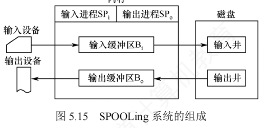
对照图 5.15，SPOOLing 系统由四部分组成：
- 输入井和输出井——在磁盘上开辟的两个专用存储区域。输入井模拟脱机输入时的磁盘，暂存输入设备的数据；输出井模拟脱机输出时的磁盘，暂存用户程序的输出数据。每个进程的输入（输出）数据以文件形式保存（称井文件），所有文件按顺序链接成输入队列或输出队列。对应图中磁盘一侧的两个方框；
- 输入缓冲区和输出缓冲区——在内存中开辟的两个缓冲区。输入缓冲区暂存输入设备送来的数据，随后传入输入井；输出缓冲区暂存从输出井读出的数据，随后送往输出设备。对应图中内存里的两个方框；
- 输入进程（SPi）和输出进程（SPo）——输入进程模拟脱机输入的外围控制机：把输入设备的数据经输入缓冲区送入输入井，CPU 需要数据时直接从输入井读取；输出进程模拟脱机输出的外围控制机：把用户程序的输出数据写入输出井，并在输出设备空闲时经输出缓冲区把数据送往输出设备。对应图中内存里的两个进程方框；
- 井管理程序——控制作业与磁盘井之间的信息交换。
于是数据流向一目了然：输入方向 输入设备 → 输入缓冲区 Bi → 输入井 → 用户进程；输出方向 用户进程 → 输出井 → 输出缓冲区 Bo → 输出设备。
共享打印机的SPOOLing工作过程
打印机是典型的独占设备，SPOOLing 可把它改造成多用户共享的虚拟设备。当多个用户进程发出打印请求时，系统并不真正立即分配物理打印机，而是由输出进程为每个请求做两件事：
- 在磁盘输出井中为其分配一个空闲盘块，把待打印数据写入其中；
- 申请一张用户请求打印表，记录用户的打印要求，并把该表挂到假脱机打印队列上。
做完这两步，用户进程就认为「打印已完成」，可继续执行后续代码——真实打印尚未开始，但这对用户完全透明。真正的打印由后台的假脱机打印进程负责：打印机空闲时，它检查假脱机打印队列；队列非空则取出队首的请求表，按其中信息把对应的输出数据从输出井读入内存缓冲区，再送物理打印机输出；一个任务完成后继续下一个；队列为空则该进程等待，直至新的打印请求将其唤醒。由于用户进程只需把数据写入磁盘即可返回、物理打印由后台进程按队列顺序执行，多个用户便可并发提交打印请求；系统为每个请求在输出井中分配独立存储区域，使各进程都以为自己独占了一台打印机——一台物理设备就这样被虚拟为多台逻辑设备。
SPOOLing系统的特点
- 提高了 I/O 速度：把对低速 I/O 设备的操作转化为对磁盘井数据的存取，如同脱机输入/输出，有效缓和了 CPU 与低速设备速度不匹配的矛盾；
- 把独占设备改造为共享设备：假脱机打印机系统中，实际上并没有把物理设备分配给任何进程；
- 实现了虚拟设备功能：每个进程都认为自己独占了一台设备。
SPOOLing 是一种以空间换时间的技术：开辟磁盘井牺牲了存储空间，却显著节省了时间。向磁盘写入数据的速度远快于直接驱动打印机——没有 SPOOLing 时，CPU 向打印机输出必须等缓慢的打印完成；有了 SPOOLing，CPU 把待打印数据快速写入输出井后即可继续其他任务，打印请求排队等待打印机空闲，CPU 与 I/O 设备实现了并行工作。
5.2.5 设备驱动程序接口
设备驱动程序是 I/O 系统上层与设备控制器之间的通信桥梁：接收上层发来的抽象 I/O 请求（如 read/write），转换成设备可识别的具体命令并发给控制器、启动设备；同时把控制器返回的状态和中断信息反馈给上层。
1. 设备驱动程序的功能
- 接收并转换请求：接收上层软件传递的命令和参数，把抽象 I/O 请求转换为与具体设备相关的操作指令，例如把逻辑盘块号转换为磁盘的盘面号、磁道号、扇区号；
- 检查合法性、查状态、传参数：检查用户 I/O 请求是否合法，查询设备当前状态，传递必要参数并设置工作方式；
- 发出 I/O 命令：设备空闲则立即启动设备执行操作；设备忙则把请求进程的 PCB 挂到该设备的等待队列上待调度；
- 响应中断：及时响应设备控制器发出的中断请求，并根据中断类型调用相应的中断处理程序进行处理。
2. 设备驱动程序的特点
与普通应用程序和系统程序相比：
- 在抽象 I/O 请求与具体设备操作之间实现双向转换，并把设备状态及操作完成情况及时反馈给请求进程；
- 实现与设备采用的 I/O 控制方式（中断驱动、DMA 等）紧密相关；
- 直接操作硬件，不同类型的设备必须配备专用驱动程序；
- 部分底层驱动功能可能由设备固件或系统 ROM 提供；
- 驱动程序应设计为可重入的，以支持多个进程对同一设备的并发调用。
3. 统一的驱动程序接口
为使各类驱动程序具有统一接口，操作系统要求：①所有驱动程序与内核之间遵循相同或相近的接口规范，便于新增和维护；②由设备管理模块把逻辑设备名映射为物理设备名并定位到驱动程序入口；③对设备访问实施权限控制，防止未授权用户非法使用设备。
5.2.6 I/O操作举例
统考对 I/O 过程的考查日益深入（2023、2024 均考键盘输入流程）。下面以 C 语言库函数 scanf() 为例，从执行 scanf("%c",&d) 开始，到键盘输入的字符最终存入变量 d，完整走一遍 I/O 操作。
先补充两个概念：内核缓冲区（位于内核空间）与用户缓冲区（位于用户空间）。两个地址空间相互隔离：内核空间存放操作系统代码和数据，供所有进程共享；用户程序运行在用户空间。由于系统调用在内核态执行，因此必须先把 I/O 设备的数据复制到内核缓冲区，在系统调用返回前，再把数据从内核缓冲区复制到用户缓冲区。
1. 两个阶段
第一阶段在 C 标准库中完成：scanf() 会关联一个由 C 标准库在用户空间管理的缓冲区 buf。
- 检查与 scanf() 关联的用户缓冲区 buf：其中已有数据则直接读取；缓冲区为空则触发 read 系统调用，从内核缓冲区取数据；
- 执行 read 系统调用。执行 trap 指令前需传入三个参数：fd（文件描述符，标识输入设备，此处为标准输入）、buf（用户空间缓冲区，接收从内核复制来的数据）、count（期望读取的最大字节数）。
第二阶段是系统调用，在内核中完成。read 系统调用经一段包含陷阱指令的代码使 CPU 从用户态陷入内核态，其大致过程为：
传入系统调用参数 → 执行 trap 指令、陷入内核态 → 执行系统调用服务例程 → 返回用户态
2. 中断驱动方式下服务例程的执行过程
- 设置相应的 I/O 参数后，发起 I/O 的进程 P 进入阻塞态，CPU 调度其他进程运行；
- 用户通过键盘输入字符，字符被送入键盘 I/O 接口的数据端口；
- 键盘 I/O 接口向 CPU 发出中断请求；
- CPU 响应中断，执行键盘中断处理程序，读取字符并将其从 I/O 端口送入内核缓冲区；
- 进程 P 被唤醒，加入就绪队列等待调度；
- 进程 P 再次获得 CPU 后，系统调用服务例程把字符从内核缓冲区复制到用户缓冲区；
- 进程 P 从系统调用返回，随后 scanf() 对缓冲区中的字符进行解析，最终存入变量 d。
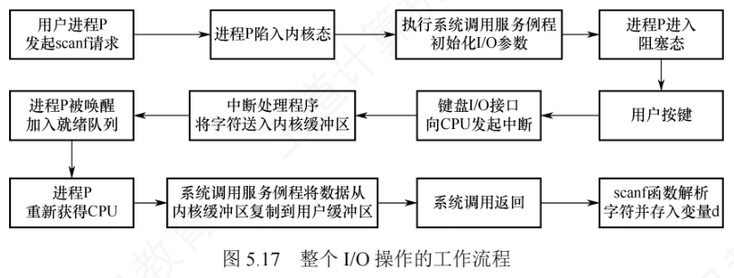
3. 数据的流向与分工
整个过程中，用户输入的字符依次流经：键盘 → 键盘 I/O 接口的数据端口 → 内核缓冲区 → 用户缓冲区 → 变量 d。两段搬运的分工值得注意：从 I/O 端口到内核缓冲区由设备驱动程序完成（它需要直接操作 I/O 端口，与硬件相关）；从内核缓冲区到用户缓冲区由设备无关的 I/O 软件层完成（它不依赖具体硬件）。
5.2.7 本节小结
本节开头提出的两个问题的参考答案如下。
1）当处理机和外部设备的速度差距较大时，有什么办法可以解决？
可采用缓冲技术缓解 CPU 与外设的速度矛盾：在主存中设立缓冲区，外设与 CPU 的输入/输出都经过缓冲区，从而减少相互等待、提高系统效率。具体形态包括单缓冲（每块 \(\max(T,C)+M\)）、双缓冲（每块 \(\max(T,C+M)\)）、循环缓冲（in/out 指针推进的循环队列）和缓冲池（三队列、四角色的共享管理机制）。
2）什么是设备独立性？引入它有什么好处？
设备独立性指应用程序使用逻辑设备名进行 I/O 操作，而无须指定具体的物理设备；操作系统在运行时把逻辑设备名动态映射到实际可用的物理设备。引入设备独立性的主要优点：①简化编程，屏蔽底层硬件细节；②提高程序可移植性，同一程序能在不同硬件配置的系统上运行；③支持 I/O 重定向与设备动态绑定，提升系统灵活性和资源利用率。
回顾本节主线：设备独立性软件向上提供统一接口，向下管理五大公共事务——统一驱动接口、缓冲管理、差错控制、独占设备的分配与回收、统一逻辑数据块。其中缓冲管理解决速度匹配问题（先算清单缓冲、双缓冲的时间账）；设备分配与回收依托 SDT—DCT—COCT—CHCT 四张数据结构、按「设备→控制器→通道」三步分配，并以 LUT 完成逻辑设备名到物理设备名的映射；SPOOLing 用磁盘井 + 输入/输出进程把独占设备虚拟成共享设备，以空间换时间；设备驱动程序则作为最后一级桥梁，把抽象请求落到具体硬件上。最后通过 scanf 的例子，把「用户层库函数 → 系统调用（trap 陷入内核）→ 设备独立性软件 → 驱动程序 → 中断处理程序」的完整链路串了一遍——这条链路正是 5.1.3 节 I/O 软件层次结构的动态呈现，也是统考最爱考查的综和分析素材。